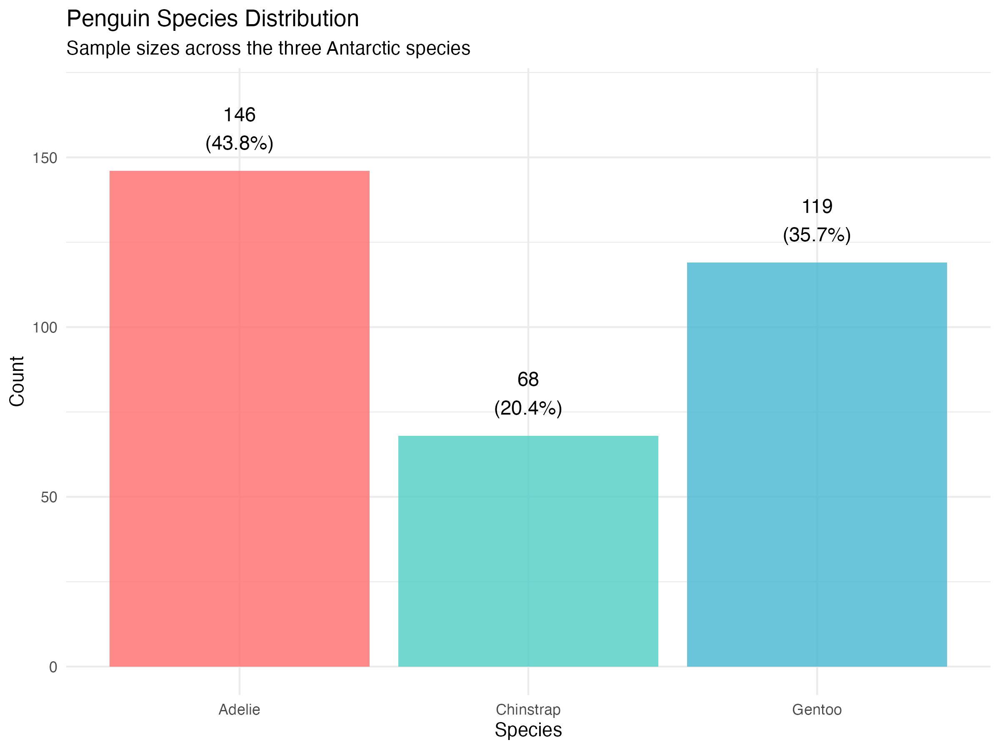
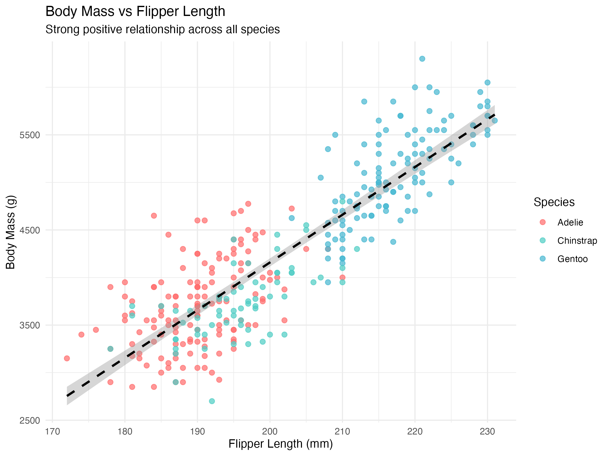

PHB 243b: Practicum in Biostatistics
Lecture 5: Statistical Analysis Plans and Project 1
2026-01-20
Course Information
- Instructor: Dr. Ronald G. Thomas
- Email: rgthomas@ucsd.edu
- Office Hours: by appointment
- TA: Man Luo
- TA Email: maluo@ucsd.edu
Lecture 5: Analysis Plans and Project 1
Today’s Agenda
- What is a Statistical Analysis Plan (SAP)?
- Essential Elements of an Analysis Plan
- Introduction to Project 1: Palmer Penguins
- The Palmer Penguins Dataset
- Sample Analysis Plan for Project 1
Question: Have you ever started an analysis and realized partway through that you were not sure what question you were trying to answer?
Answer: “In my first consulting project, I spent two weeks building models before realizing the client wanted descriptive statistics, not predictions. A clear analysis plan would have prevented that wasted effort and the awkward conversation that followed.”
Part I: Statistical Analysis Plans
What is a Statistical Analysis Plan?
A Statistical Analysis Plan (SAP) is a document that specifies:
- The research questions to be addressed
- The statistical methods to be used
- How results will be presented
- Decisions made before seeing the data
Note
The SAP is written before conducting the analysis. It prevents data dredging and documents your analytical intentions.
Question: Why is it important to write the analysis plan before looking at the data?
Answer: “Writing the plan first prevents confirmation bias and p-hacking. If you decide your methods after seeing the data, you might unconsciously choose approaches that give significant results. Pre-specification makes your analysis more credible and reproducible.”
Why Analysis Plans Matter
Professional importance:
- 72.3% of collaborative biostatisticians rate SAPs as “absolutely essential” (Slade et al., 2023)
- Required for FDA submissions and clinical trials
- Expected in peer-reviewed publications
Practical benefits:
- Forces clear thinking about objectives
- Facilitates team communication
- Reduces analytical “wandering”
- Creates audit trail for reproducibility
Question: How does having an analysis plan help when working in a team?
Answer: “The plan serves as a contract between team members. Everyone knows what analyses will be performed and how. When the statistician and the PI agree on the plan upfront, there are no surprises when the results come in—even if they are not what the PI hoped for.”
Elements of an Analysis Plan
1. Introduction and Background
- Study context and motivation
- Research questions or hypotheses
- Brief literature context
2. Data Description
- Data source and collection methods
- Study population and sample
- Key variables (outcomes, predictors, covariates)
Question: How much detail about the data should appear in the plan versus in the final report?
Answer: “The plan should describe what data you expect to have and how you will handle it. The report describes what you actually observed. For example, the plan says ‘missing values will be handled by multiple imputation’; the report says ‘of 344 observations, 11 had missing values which were imputed using…’”
Elements of an Analysis Plan (continued)
3. Statistical Methods
- Descriptive statistics to be computed
- Primary analysis methods
- Secondary/sensitivity analyses
- Handling of missing data
- Significance level and multiple testing adjustments
4. Results Presentation
- Tables to be generated
- Figures to be created
- How effect sizes will be reported
Question: Should the analysis plan specify exact table shells?
Answer: “Yes, creating table shells forces you to think through exactly what you will report. It also helps identify gaps—if you cannot fill a cell in your planned table, you may be missing a variable or analysis. In clinical trials, table shells are required before unblinding.”
Part II: Palmer Penguins Dataset
Meet the Palmer Penguins
- Data collected at Palmer Station, Antarctica
- Three penguin species: Adelie, Chinstrap, Gentoo
- Morphometric measurements: bill, flipper, body mass
- Collected by Dr. Kristen Gorman (2007–2009)
Note
The palmerpenguins dataset is an excellent teaching alternative to the classic iris dataset, with real ecological context and modern data science applications.

Question: Why might palmerpenguins be preferable to iris for teaching?
Answer: “The iris dataset has problematic historical associations and unrealistic properties (e.g., one species is linearly separable). Penguins have real ecological context, meaningful missing data, and variables that behave like real biological measurements.”
Dataset Structure
344 observations, 8 variables:
| Variable | Type | Description |
|---|---|---|
species |
Factor | Adelie, Chinstrap, Gentoo |
island |
Factor | Biscoe, Dream, Torgersen |
bill_length_mm |
Numeric | Bill length (mm) |
bill_depth_mm |
Numeric | Bill depth (mm) |
flipper_length_mm |
Numeric | Flipper length (mm) |
body_mass_g |
Numeric | Body mass (g) |
sex |
Factor | Female, Male |
year |
Integer | 2007, 2008, 2009 |
Question: Which variable would you expect to be the primary outcome in most analyses of this dataset?
Answer: “Body mass is often the outcome of interest because it indicates penguin health and condition. Flipper length, bill dimensions, species, and sex are natural predictors. However, the research question determines the outcome—species classification analyses would use species as the outcome.”
Species Characteristics

Key observations:
- Gentoo penguins are substantially larger
- Adelie and Chinstrap have similar body mass
- Species differ in morphometric proportions
- Sexual dimorphism present within species
Sample sizes:
- Adelie: 152 (44%)
- Gentoo: 124 (36%)
- Chinstrap: 68 (20%)
Question: What analytical challenge does the unequal species distribution present?
Answer: “With Chinstrap having only 68 observations compared to 152 for Adelie, species-specific estimates for Chinstrap will have wider confidence intervals. In classification tasks, a naive model could achieve 44% accuracy by always predicting Adelie. Class imbalance must be addressed in model evaluation.”
Key Relationships

Correlations with body mass:
| Variable | r |
|---|---|
| Flipper length | 0.87 |
| Bill length | 0.60 |
| Bill depth | -0.47 |
Note: The negative correlation with bill depth reflects Simpson’s paradox—within species, the correlation is positive.
Question: Why might bill depth show a negative correlation with body mass overall but positive within species?
Answer: “Gentoo penguins are largest but have shallow bills; Adelie have deep bills but smaller bodies. Aggregating across species reverses the within-species relationship. This is Simpson’s paradox—a reminder that aggregate relationships can mislead when subgroups differ systematically.”
Data Quality Considerations
Missing data:
- 11 observations have missing values (3.2%)
- Missing: bill measurements, body mass, or sex
- Complete cases: 333 observations
Analytical decisions required:
- Complete case analysis vs. imputation
- Handling of categorical predictors
- Potential outliers in morphometric measurements
- Year effects (temporal confounding)
Question: When might you choose complete case analysis over imputation?
Answer: “Complete case analysis is acceptable when missing data are few, likely missing completely at random (MCAR), and you have sufficient sample size. With only 3% missing and 333 complete cases, complete case analysis is reasonable here. Imputation adds complexity that may not be warranted for an exploratory teaching dataset.”
Part III: Sample Analysis Plan
Project 1 Analysis Plan: Overview
Research Question:
What is the relationship between morphometric measurements and body mass in Palmer penguins, and how do these relationships vary by species?
Objectives:
- Characterize the Palmer penguins dataset through exploratory analysis
- Identify the strongest predictors of body mass
- Develop and evaluate regression models for body mass prediction
- Assess whether species-specific models improve prediction
Question: Is this research question specific enough for an analysis plan?
Answer: “It provides clear direction but could be more specific. A stronger version might state: ‘We will quantify the proportion of variance in body mass explained by flipper length, bill dimensions, and species using linear regression, comparing models with and without species interaction terms.’”
Sample Plan: Data Description
Data Source
Palmer penguins dataset from the palmerpenguins R package (Horst et al., 2020). Original data collected by Dr. Kristen Gorman at Palmer Station LTER.
Study Population
Adult penguins of three species (Adelie, Chinstrap, Gentoo) from three islands in the Palmer Archipelago, Antarctica, 2007–2009.
Sample Size
344 observations; analyses will use complete cases (expected n ≈ 333).
Question: What information about the data source builds credibility?
Answer: “Citing the original collector, the research station, and the time period establishes data provenance. Referencing the R package ensures others can access identical data. This documentation enables reproducibility and helps readers assess data quality and generalizability.”
Sample Plan: Variables
Primary Outcome
body_mass_g: Body mass in grams (continuous)
Primary Predictors
flipper_length_mm: Flipper length in millimeters (continuous)bill_length_mm: Bill length in millimeters (continuous)bill_depth_mm: Bill depth in millimeters (continuous)
Effect Modifiers
species: Penguin species (Adelie, Chinstrap, Gentoo)sex: Sex (Female, Male)
Question: Why distinguish between “predictors” and “effect modifiers”?
Answer: “Predictors are variables we expect to have direct associations with the outcome. Effect modifiers change the relationship between predictors and outcome—the effect of flipper length on body mass may differ between species. This distinction guides model specification: effect modifiers suggest interaction terms.”
Sample Plan: Statistical Methods
Descriptive Statistics
- Continuous variables: mean, SD, median, IQR, range
- Categorical variables: frequencies and percentages
- Summaries overall and stratified by species
Primary Analysis
- Simple linear regression: body mass ~ flipper length
- Multiple regression: body mass ~ flipper length + bill length + bill depth
- Species-adjusted model: add species as covariate
- Interaction model: add species × flipper length interaction
Question: Why build models sequentially rather than starting with the most complex model?
Answer: “Sequential model building shows how each component contributes to prediction. If R² jumps from 0.76 to 0.87 when adding species, we learn that species explains substantial additional variance. Starting complex obscures which variables matter and why.”
Sample Plan: Model Evaluation
Model Comparison
- R² and adjusted R² for variance explained
- RMSE for prediction error in original units
- AIC/BIC for model selection
- F-tests for nested model comparison
Diagnostic Checks
- Residual plots for linearity and homoscedasticity
- Q-Q plots for normality of residuals
- Leverage and Cook’s distance for influential observations
- Variance inflation factors for multicollinearity
Question: Which diagnostic check is most important for linear regression?
Answer: “Residual plots are fundamental—they reveal violations of linearity, constant variance, and independence simultaneously. A well-behaved residual plot (random scatter around zero) suggests the model assumptions are reasonable. Patterns indicate problems that formal tests might miss.”
Sample Plan: Results Presentation
Tables
- Table 1: Sample characteristics by species
- Table 2: Correlation matrix of morphometric variables
- Table 3: Regression model comparison (coefficients, SE, R²)
Figures
- Species distribution and sample sizes
- Scatter plots of predictors vs. body mass (by species)
- Correlation heatmap
- Regression diagnostic plots
- Predicted vs. observed body mass
Question: How many figures are appropriate for a short analysis report?
Answer: “Quality over quantity. Each figure should answer a specific question or convey information not easily expressed in text. For a course project, 4–6 well-designed figures are typically sufficient. More risks overwhelming readers; fewer may leave gaps in the narrative.”
Sample Plan: Sensitivity Analyses
Robustness Checks
- Compare complete case analysis to multiple imputation
- Assess influence of potential outliers (exclude, compare results)
- Stratified models by species (vs. pooled with interaction)
- Alternative model specifications (log-transformed body mass)
Scope Limitations
- Results specific to Palmer Archipelago population
- Cannot establish causal relationships (observational data)
- Temporal trends not primary focus (limited to 2007–2009)
Question: When should you actually perform sensitivity analyses versus just planning them?
Answer: “Sensitivity analyses test whether conclusions depend on analytical choices. If your primary analysis shows flipper length predicts body mass, check whether this holds after removing outliers or using imputation. Perform planned sensitivity analyses; add others if reviewers or results raise concerns.”
Summary and Next Steps
Key Takeaways
Analysis Plans:
- Write the plan before analyzing data
- Include: background, data description, methods, presentation plan
- Be specific enough that someone else could execute your plan
Palmer Penguins:
- 344 penguins, 3 species, morphometric measurements
- Body mass strongly associated with flipper length (r = 0.87)
- Species differences are substantial (Simpson’s paradox)
Project 1:
- Present your analysis plan on Thursday (January 22)
- 15–20 minutes per team, all members participate
- Focus on clarity and justification of methods
Assignment: Project 1 Plan
Due Thursday, January 22 (in-class presentation)
Your analysis plan should include:
- Clear research question(s)
- Description of the data and variables
- Planned statistical methods with justification
- Table shells and figure descriptions
- Sensitivity analyses
Note
You may work in teams as assigned. All team members must contribute to the presentation. Submit slides to Canvas before class.
Question: How should team members divide the work on the analysis plan?
Answer: “Divide by section, not by task type. One person owns the data description, another the methods, etc. Then review each other’s sections. This ensures everyone understands the full plan while allowing efficient parallel work. Meet to reconcile sections before the presentation.”
References
Gorman KB, Williams TD, Fraser WR (2014). Ecological sexual dimorphism and environmental variability within a community of Antarctic penguins (genus Pygoscelis). PLOS ONE 9(3): e90081.
Horst AM, Hill AP, Gorman KB (2020). palmerpenguins: Palmer Archipelago (Antarctica) penguin data. R package. https://allisonhorst.github.io/palmerpenguins/
Slade E, et al. (2023). Essential team science skills for biostatisticians on collaborative research teams. Journal of Clinical and Translational Science 7: e243, 1–9.
International Council for Harmonisation (2017). ICH E9(R1): Statistical Principles for Clinical Trials: Addendum on Estimands.